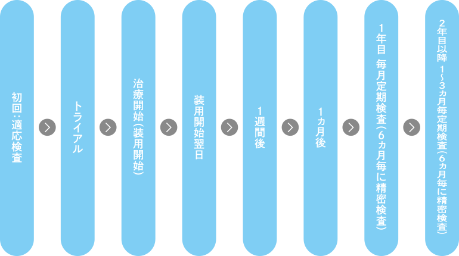
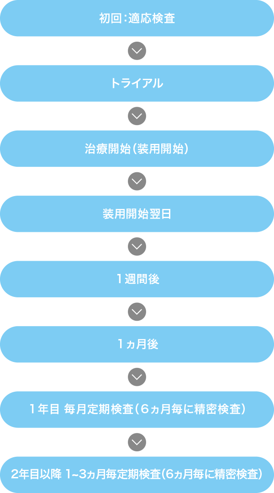

オルソケラトロジーの概要
オルソケラトロジーとは近視を矯正する治療法の一種です。世界各国でその安全性と有効性が認められ、現在では日本でも実施されています。特殊なコンタクトレンズを寝ている間に装用して矯正を行います。特に小児期の近視の進行抑制に効果があると注目されています。
治療の流れ
 定期検査
オルソケラトロジーレンズを快適に装用していただくために定期検査を必ず受けてください。
定期検査の際には使用中のレンズや保存ケースを持参してください。
また、調子よく感じていても、気づかないうちに眼やレンズに負担をかけていることがあり、見え方が急に変化したり、痛みや違和感を感じる場合があります。その場合、レンズの使用を中止して、すぐに眼科で受診してください。
他の矯正方法との比較
| 長所 | 短所 | |
|---|---|---|
| 眼鏡 | ||
| コンタクトレンズ | ||
| オルソケラトロジーレンズ | ||
| レーシック |
0.01%アトロピン（マイオピン）点眼との併用
オルソケラトロジーと0.01%アトロピン（マイオピン）点眼を併用することで、オルソケラトロジー単独療法よりも、近視進行抑制効果が報告されています。併用の際は、マイオピン点眼をさしてから、5分以上時間をあけてオルソケラトロジーレンズを装用して下さい。
マイオピン点眼についてはこちら主な注意事項
スペシャルコラム
コンタクトレンズのご用命は
＊受診は定期検査を含めて全て完全予約制です。
インターネット予約は承っておりませんので、
必ずお電話または窓口にてご予約をお願い致します。


| 診療時間 | 月 | 火 | 水 | 木 | 金 | 土 |
| 9:30〜12:30 | ○ | ○ | ○ | ○ | ○ | ○ |
| 15:30〜18:30 | ○ | − | ○ | ○ | ○ | − |
定休日：土曜午後・日曜日・祝日
疾患の内容により、すべての検査が行えない場合があります。